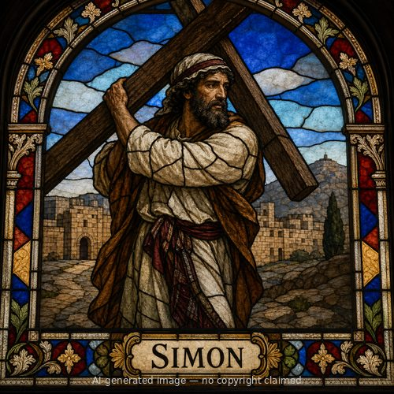
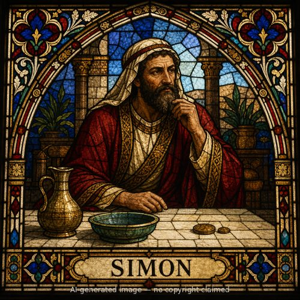
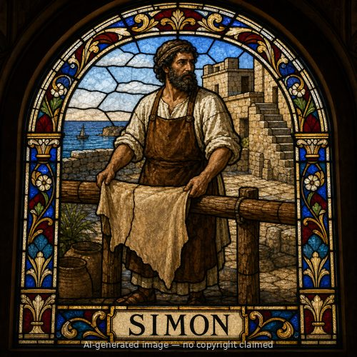

Simon (M)
First named in Acts 8:9-24
Simon practiced sorcery in Samaria and had amazed the population for a long time, so that people called him "the Great Power of God" (Acts 8:9-11). When Philip came preaching Christ and performing genuine signs, Simon himself believed and was baptized, and "continued on with Philip" astonished at the miracles he witnessed (8:12-13). When the apostles Peter and John arrived from Jerusalem and laid hands on the new believers so they received the Holy Spirit, Simon saw the visible result and offered the apostles money, asking, "give this authority to me as well, so that everyone on whom I lay my hands may receive the Holy Spirit" (8:14-19) -- treating a gift of God's Spirit as a marketable power he could purchase and resell for his own prestige. Peter's rebuke was severe and direct: "may your silver perish with you, because you thought you could obtain the gift of God with money... your heart is not right before God" (8:20-21). He called Simon to repent and pray for forgiveness, warning he was "in the gall of bitterness and in the bondage of iniquity" (8:22-23). Simon's response -- asking Peter to pray for him so that nothing Peter had said would happen to him -- leaves his final spiritual state genuinely ambiguous in the text (8:24). His name later gave rise to the term "simony," the sin of buying or selling spiritual office or power, a lasting warning against treating God's gifts as commodities.
Thought for Today
Simon believed the Holy Spirit's power could be bought with money. Salvation and every gift of grace come freely through Jesus, never something we can purchase or earn.
References: Acts 8:9-24
Genealogy
Father
—Mother
—Spouse(s)
—Children
—New Testament Church
- Samaria — sorcerer who professed belief and was baptized, then rebuked by Peter for trying to buy the Spirit's power with money
Acts 8:9-24
Places
Other people named Simon


